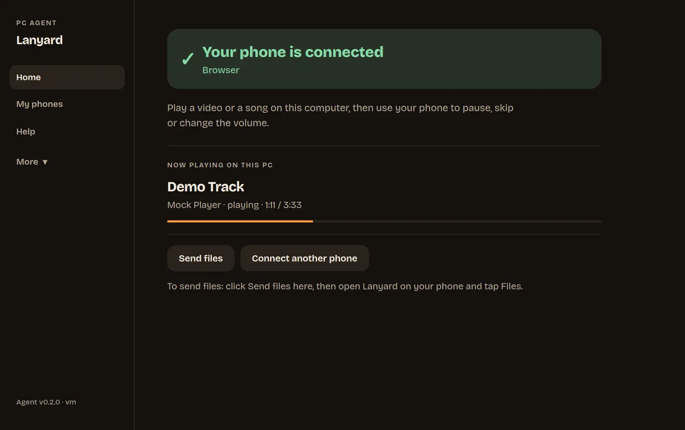
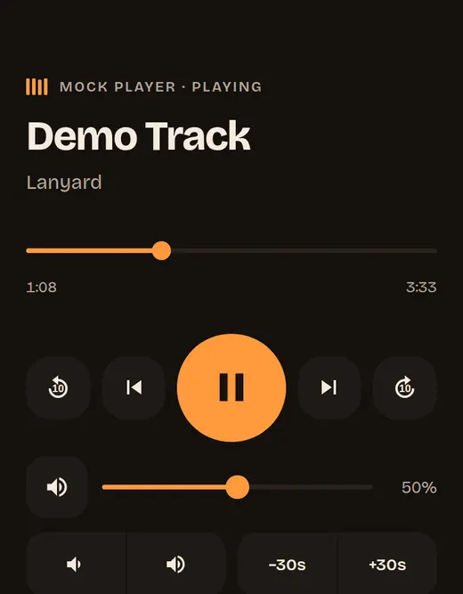
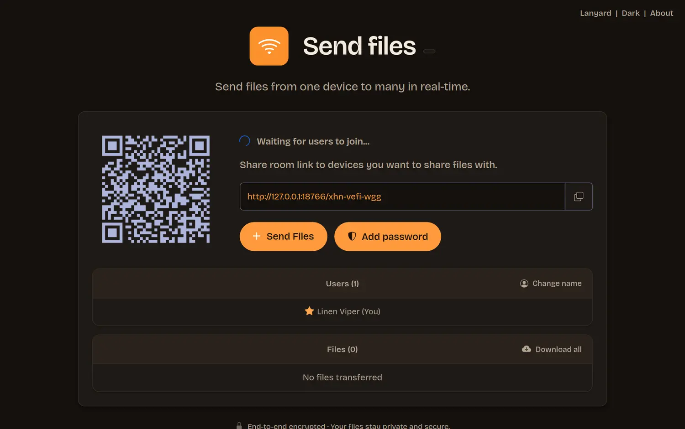

Install Lanyard.
On your computer. Open it and a code appears.
Lanyard makes your phone a remote, a touchpad, a keyboard and a file sender for your computer. It all happens on your own Wi-Fi. No account, no cloud, no cost.
Free and open source. Windows 10/11, macOS 11+, Linux, Android 9+. iPhone app coming.
Do it once. After that your phone finds your computer by itself.
On your computer. Open it and a code appears.
Open the app on your phone and point it at the screen.
On the computer, once, for each new phone.
Play something. Pause, skip and turn it up from the sofa.



Play, pause, skip, seek and volume for Spotify, VLC, YouTube and more.
Move, click, scroll and type on the computer.
Scan a code, pick files. They go straight between your devices.
Android phones work with any computer, with no software on it.
Encrypted, and tied to your computer’s own key.
Nothing to sign up for. Ever required.
Loading the latest version…
All downloads, checksums and install help
The installer is not yet signed by a known publisher, so SmartScreen warns. Choose More info, then Run anyway. When it asks, allow access on Private networks so your phone can reach the computer.
Open the .dmg and drag Lanyard to Applications. If macOS cannot verify the app, right-click it and choose Open once. Then allow Accessibility (System Settings, Privacy & Security) so the phone can use the media keys, mouse and keyboard, and allow Local Network when asked. Song titles and progress are not available on macOS; play, pause, skip and volume work.
Debian and Ubuntu: sudo apt install ./phone-remote_*.deb. Other distributions: unpack the .tar.gz and run ./install.sh. Media control uses D-Bus (MPRIS); the mouse and keyboard work on X11 and, with a one-time permission, on Wayland.
Every release lists SHA-256 checksums (SHA256SUMS). Compare with sha256sum file (Linux), shasum -a 256 file (macOS) or certutil -hashfile file SHA256 (Windows).
No. Install the app, scan the code, approve the phone. An optional account is planned for people who want to see all their devices in one place; the remote will always work without it.
Yes. Your phone and computer only need to be on the same Wi-Fi. Bluetooth mode on Android needs no network at all.
The connection is encrypted and your phone remembers your computer’s own key, so other people on the network cannot read or change it. Every new phone has to be allowed on the computer first.
On the computer, click Send files. A page opens with a square code. On the phone, open the Files tab, scan the code and pick files. They go straight between the two devices over your Wi-Fi, with no size limit when the computer receives. A phone has to hold an incoming file in memory, so keep files sent to a phone to a few hundred MB.
Yes, if you run your own Send files server. It is optional and not needed for normal use. The guide in the project explains how.
It is being prepared for the App Store. Until then, point the iPhone camera at the code on your computer and use the remote in Safari.
Yes, and the source code is open. Lanyard is built on the MIT-licensed FileSync for file sending.
Download it, scan the code, and the sofa is the control room.